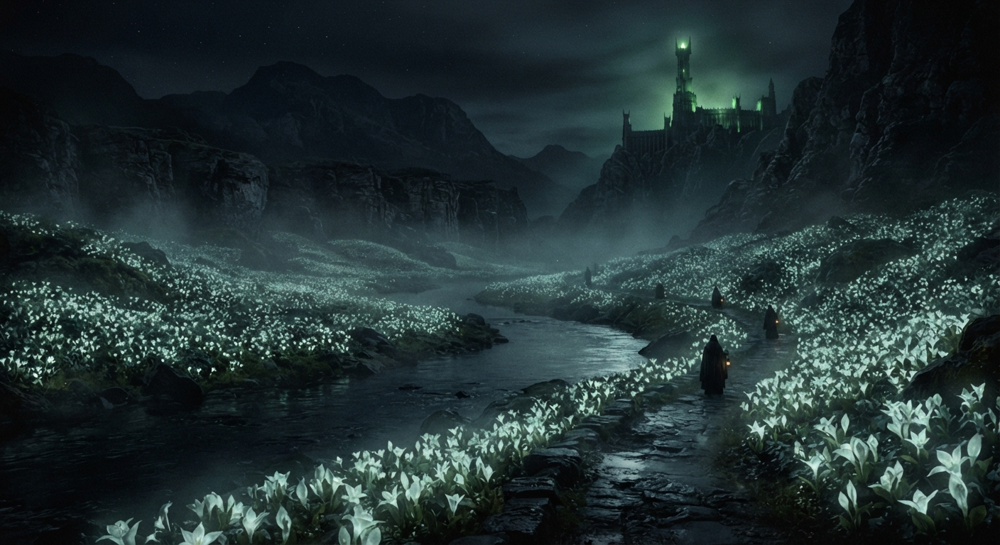
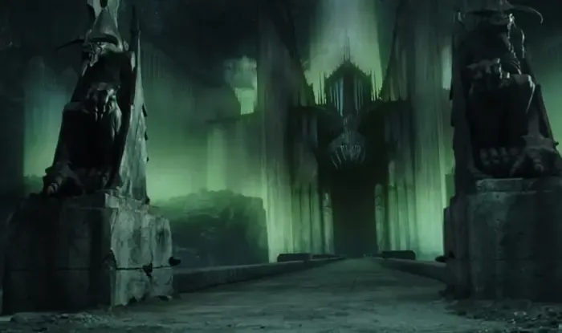

Recorra el esplendor de mármol de Minas Ithil, sus jardines y sus miradores bajo la luz de la luna.
Descubra el misterio crepuscular de Minas Morgul, sus puentes de piedra y sus terrazas de flor pálida.
Hitos Patrimoniales y Paisajísticos
1. La Gran Torre de la Luna Naciente
Ubicación: Distrito de la Cúspide.
Patrimonio históricoMirador de la Cúspide. Vista desde la plaza de armas alta.
Torre de mármol blanco alzada bajo Isildur para custodiar la Piedra de Ithil.
Su cima gira lentamente y sus terrazas conservan los jardines de la ciudadela.
Patrimonio históricoEl Árbol Blanco. Retoño de Nimloth plantado por Isildur.
Primer Árbol Blanco de Gondor, sembrado por Isildur con un fruto de
Nimloth. Sauron lo quemó en el 3429 de la Segunda Edad; Isildur escapó con una semilla.
Arquitectura defensivaPuerta de la Luna. Acceso principal a la ciudadela.
Anillo de murallas de mármol blanco que ciñe la ciudadela. La Puerta de la Luna
abre el paso desde el valle y conserva el trazado de la guardia original.
JardinesJardines de la Ciudadela. Fuentes y terrazas sobre el valle.
Terrazas ajardinadas con fuentes de piedra y miradores sobre el valle de Ithilien.
Un remanso verde entre las murallas, pensado para el paseo al atardecer.
Ubicación: Praderas del valle, junto al Morgulduin.

Visita nocturnaPraderas de la Flor Pálida. Floración nocturna en el valle.
Prados de flores blancas de aroma enfermizo y penetrante que cubren las riberas
del río. Al caer la noche, su blancura pálida marca el paisaje del valle.
Ubicación: Muro norte, final del camino de Morgul.

Acceso históricoPuerta de Morgul. El acceso al final del camino, tras el puente.
La puerta de la ciudad, tallada como una boca abierta con dientes y ojos. El camino
de Morgul cruza el puente y asciende hasta este acceso; las estatuas corrompidas
marcan la cabecera del puente.
 Patrimonio histórico
Patrimonio histórico